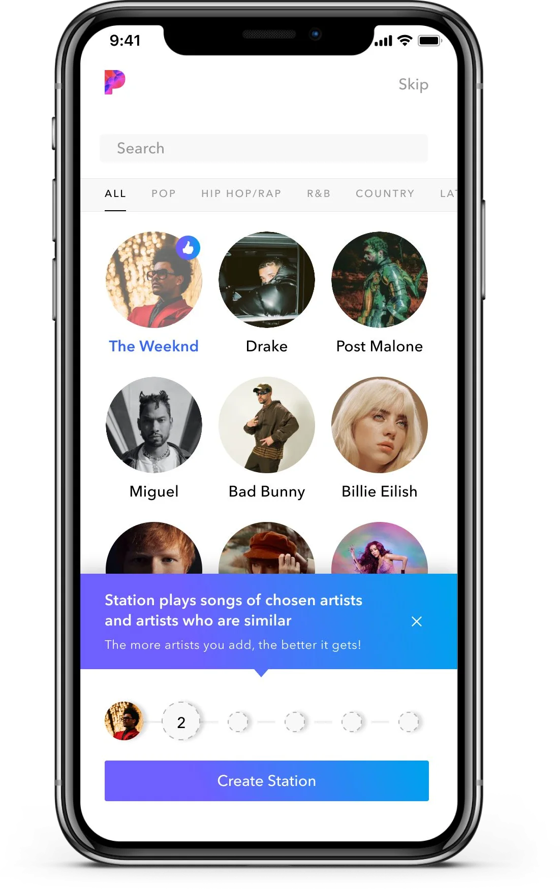
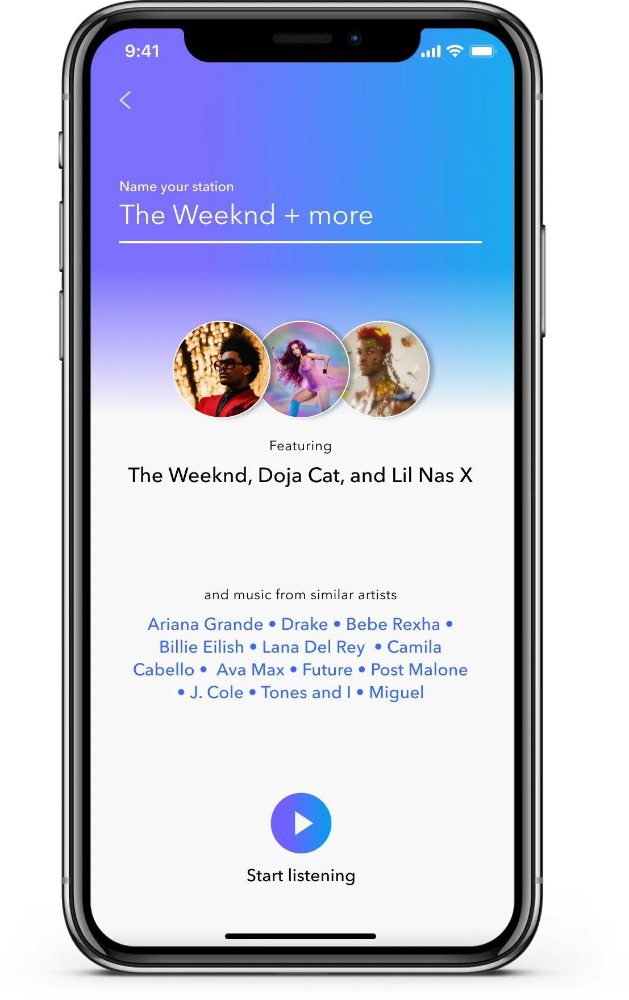

Say what it will make
Before an AI produces something from a person's inputs, tell them what kind of thing is coming and how their inputs shape it, so the result is recognized rather than puzzled over.
Where it sits in the flow
- AskThe person has a question, or a thing they want to find.
- AnswerThe AI returns something: an excerpt, a marker, a segment, a generated answer.
- CheckThe person looks at the evidence and decides whether to believe it.
- DecideThe person acts: proceeds, moves on, or corrects the AI.
What users needed
People did not know what the AI was going to make from their choices. In testing, they assumed the result would contain only what they had picked, and were confused when it contained more. They needed the product to say, in their words, what kind of thing their inputs would produce, and they wanted a hand in it: naming the result turned out to be half the fun.
The problem
Generative and recommendation systems make something new from what a person gives them. The person can see their inputs and, later, the output, but the step in between is invisible, so they fill it in with a guess. When the guess is wrong, a good result looks like a mistake: the music they did not ask for, the paragraph that says more than they typed, the suggestion that came from nowhere.
The pattern
Explain the transformation in one plain sentence, at the moment the person is giving their inputs: what the system will make, and how what they are choosing shapes it. Then, when the result arrives, show its composition before the person has to use it: here is what you gave me, here is what I added, here is what you can change. Where it fits, let the person name or adjust the result; a thing they have named is a thing they understand.
What makes it hard
The sentence has to be short enough to read and true enough to trust. Explanations written in the system's vocabulary are skipped; explanations that promise more than the system does are worse than none. The reveal of the result has to be paced: all at once and nobody reads it, too slow and it feels like a loading screen.
When it fails
Without the explanation, the person judges the result against the wrong expectation and calls a good result wrong. With a wrong explanation, they trust a bad result. If the result arrives as a finished object with no visible link to their inputs, the inputs feel ignored, and the person does not learn how to get a better one next time.
In my work
In Pandora's onboarding, a short message appears while the listener is choosing artists: a station plays songs by the chosen artists and by artists similar to them, and the more artists you add, the better it gets. When the station is created, the screen builds up in stages, like a festival line-up: the chosen artists first, then "and music from similar artists" with the names, then the play button, and the listener can rename the station before it starts.
In pictures


Source
- When design serves hundreds of millions: how one designer helps complex systems truly work. Xinhua Net, February 3, 2026, in Chinese. Xinhua Net. A feature about my work at Pandora, Dynata and Amazon; the Pandora patterns on this site are my own English write-up of the onboarding work it describes.